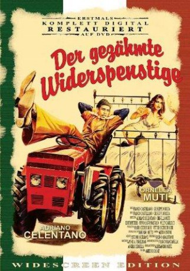

#8086 Der Gezähmte Widerspenstige
 
 IMDB-Wertung: 7.7 / 10
IMDB-Wertung: 7.7 / 10  Metascore: 0
Metascore: 0 
A grouchy farmer, known around his small Italian town as being wonderful to his employees, but actively driving everyone else away, is in for a surprise when a beautiful girl from the city, ends up on his stoop after her car breaks down in the rain.
Jahr: 1980
Dauer: 106 Minuten
FSK: 6
Land: Italien Studio: Jugendfilm-VerleihTonspuren:
Untertitel:
Auflösung: 1080p (1916x1080) Größe: 8151 MB
Genre: Komödie
Regisseur: Franco Castellano, Giuseppe Moccia
Drehbuch: Franco Castellano
Soundtrack: Detto Mariano
Darsteller:
 Adriano Celentano als Elia Codogno
Adriano Celentano als Elia Codogno Ornella Muti als Lisa Silvestri
Ornella Muti als Lisa Silvestri- Milly Carlucci als Renata
- Jimmy il Fenomeno als Campagnolo
- Edith Peters als Mamie
- Pippo Santonastaso als Don Cirillo
- Sandro Ghiani als Benzinaio
- Nicola De Buono als Vittorio
- Vincenzo De Toma als Contadino malato
- Elena Mari als
- Angelo Mainardi als
- Guido Spadea als Ragioniere
- Marco Columbro als Guidatore del camioncino
- Gianna Coletto als Nipote di Mamie
- Massimo Mirani als
- Victor Poletti als
- Giuseppe Santobuono als
- Luigi Uva als
- Luigi Pelitti als
- Gianni Franco als
- Roberto Giardi als
- Maurizio Fardo als
- Francesco Papi als
- Luciano Fino als
- Paolo Tarquini als
- Vincenzo Tripodi als
- Flora Carosello als Mamie
- Massimo Buscemi als Biagi - contadino di Elia (uncredited)
- Raffaele di Sipio als Sommelier (uncredited)
- Fosco Gasperi als Giornalista (uncredited)
Datei: X:\1980\Gezähmte Widerspenstige, Der (1980, FSK6, 1916x1080).mkv seit 24.01.2018
Festplatte: HD 1980-1986
 Es gibt insgesamt 33 Filme in der Gruppe '1980'
Es gibt insgesamt 33 Filme in der Gruppe '1980'